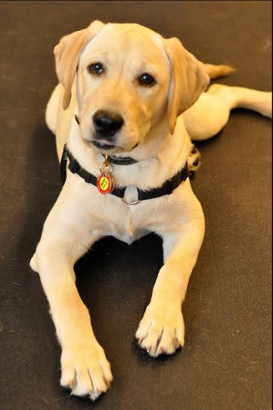
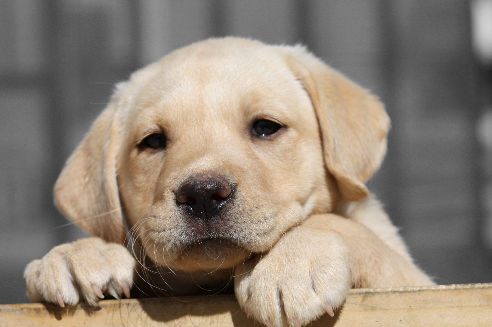

ORIGEN
Esta raza se desarrollo en Inglaterra a mediados del siglo XIX, por varios Kennels; lo que querian era refinar la raza y un perro de la casa perfecto.Los primeros labradores provienen de una isla Terranova, en donde los antepasados de este perro lo utilizaba para la caza. Se conocia como perro de agua.
CUIDADOS DIARIOS
El peso de esta raza en machos de 29 a 36kg, y en hembra de 25 a 32kg la altura es de 57 a 63cm en machos y en hembras es de 55 a 60 cm.
550 a 600g diarios de alimento completamente seco.
Por ser tan activo es necesario ejercitarlo, para que sea un perro sano.
Tiende a tener problemas de obesidad y si el perro se aburre comienza a tener una conducta de destructiva.
Hay que cepillarlo en forma regular para quitar el pelo muerto y mantener su pelaje saludable y brilloso.
